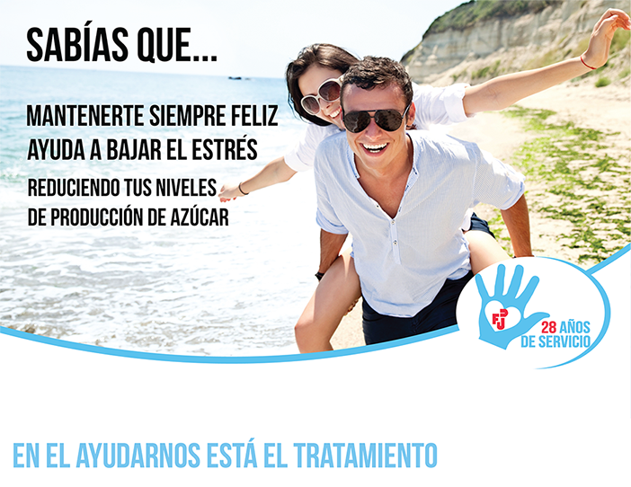
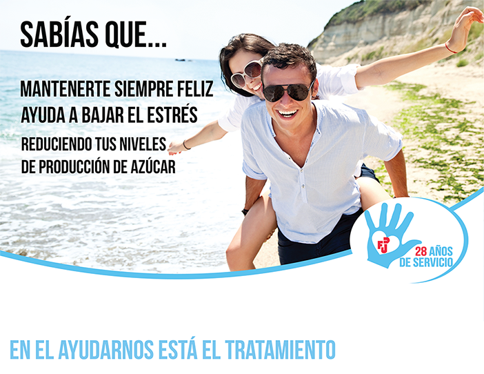

Habilidades
Comunicación
En las áreas de comunicación poseo conocimiento en Marketing, Redacción Publicitaria, Investigción y Comunicación Interna
Diseño
En las áreas de diseño poseo manejo en las distintas herramientas de edición gráfica y web

Publicista Creativa
Me gusta el desarrollo de las comunicaciones internas de una empresa a favor de formar y mantener buenas relaciones entre los clientes internos para con la institución. Todo esto tiene la finalidad de crear buenos entornos laborales que logren una fidelización del trabajador con su empresa.
El Marketing y la Publicidad para mi es el espacio en donde se permite soñar, imaginar y crear de forma estratégica.
El diseño web me permite crear nuevos espacios de encuentro y difusión de mensajes, lugar donde también se confluencia el arte, la creatividad, la comunicación y lo estratégico.
Me llamo Michelle Navia y soy Publicista en mención creativa titulada de la Universidad de Santiago de Chile.
Decidí estudiar Publicidad porque me encanta la áreas de comunicación y diseño, a demás de ser una carrera bastante equilibrada en donde se permite el pensamiento creativo lateral en pos de la consecución de objetivos y metas.
Historial de actividades
Curse mis estudios en Publicidad en mención creativa en la Universidad de Santiago de Chile, logrando mi titulación el 17 de Junio del 2016
Realicé trabajos en la Universidad como ayudante en los ramos "Teoría de la Publicidad" y "Taller de Publicidad" por cuatro semestres.
Trabajé como diseñadora web para la creación del portal interno del banco, tanto para empresas como para personas, en el departamento de innovación de internet.
En las áreas de comunicación poseo conocimiento en Marketing, Redacción Publicitaria, Investigción y Comunicación Interna
En las áreas de diseño poseo manejo en las distintas herramientas de edición gráfica y web
A continuación se expondrá un breve extracto de un diario personal encontrado en las expediciones de búsqueda de material orgánico en la Tierra en el cual se revelará una mirada de lo experimentado por las propias víctimas y los procesos culturales acontecidos en el contexto del año 2.330 en Santiago de Chile.
Me acaba de llegar una postal de mi hermana que reside en estos momentos en la Antártica, ¡y qué bien que nos venía esto!, ya que se cumplían más de siete semanas en las que teníamos cero noticias de ella. Debo reconocer que tengo un revoltijo vomitivo de sentimientos, no sé si estar feliz o triste y a esto le acompaña una preocupación que me embarga por completo. Que lástima que haya sido solamente una postal y no cinco… como las que necesitábamos. Mis bisabuelos siempre comentan que en algún muy remoto pasado las postales eran hechas de cartón, ¿cartón…? , en estos momentos es un material casi inexistente, y la cantidad que pudiese haber jamás sería utilizada para este tipo de cosas, pero bueno… a mí me parecen más útiles las postales de ahora porque son hechas de polietileno que ayudan a contener y preservar de mejor forma el agua.
No puedo sacarme de la cabeza el hecho que recibimos solo una postal de agua y que esto no es suficiente, cada vez más hemos logrado resucitar las semillas que mi abuelo tenía almacenadas. Estas necesitan, además de los nutrientes que les aportamos de manera artificial, agua dulce de procedencia natural y sin contaminación que es extraída únicamente en los glaciares en cantidades muy bajas.
Estuve averiguando un poco en la interkay (el banco de información secreto) y decia que la principal causa de la aniquilación de la vida biológica del suelo en el planeta se debe en gran parte a la perfecta alineación de la Tierra con el centro del universo. Esta información fue catalogada como mito mundial, como una popular mentira del fin del mundo relacionada con la milenaria civilización maya. La explicación concreta se debe a que esta alineación perfecta dio como resultado a la despolarización del planeta se había anulado lo que es el norte y el sur dando un catastrófico resultado, miles de electrones se liberaron al espacio en conjunto con minerales y metales, lo que hizo que la tierra perdiera muchas propiedades dejándola vulnerable a los efectos de la maldita contaminación que avanzaba como huracán de lobos.
Al no haber plantas y escasos animales, sobrevivimos de la sintetización pura de la química. Otra consecuencia fue que una cantidad importante de personas emigraran hacia la única reserva natural de agua dulce que existe en los milenarios glaciales de la Antártica, entre los cuales iba mi hermana… y su vez, una gran cantidad de chinos. ¡Chinos de mierda! Atestan cualquier lugar en donde asientan, como si nos gustara estar plagados de amarillos gritones.
Pero en serio, necesitamos más agua, las plantas no sobrevivirán en este ambiente tan hostil… y nosotros tampoco. Fin de la información. Material orgánico encontrado: cero ; sobrevivientes: cero.
I
-Me quede encerrada otra vez en la habitación fría, espero que mi abuelo no tarde mucho en darse cuenta que estoy aquí abajo, ayer casi muero de hambre y hoy no estoy dispuesta a pasar por lo mismo. Me aterra este lugar, está lleno de dibujos a medio hacer de partes del cuerpo y no entiendo cómo a las personas pueden gustarles tanto, los adoran y cuidan como si fueran guaguas. Si vieran los dibujos que yo hago en el colegio con los lápices nuevos que me regalo mi tío entendería que eso sí que es arte y del bueno. Ya me está empezando a dar hambre de nuevo y si no me como el pan que dejé afuera alguien puede venir y comérselo, y yo me quedaré sin colación, pero mi abuelo no responde… ya me duelen las manos de golpear esta enorme puerta.
En el fondo de la habitación hay un dibujo que es diferente a los demás, por eso está en ese lugar y no al lado de los cuerpos feos. En este aparece la cara de un hombre, hecho con tiza de color rojo. Me llaman la atención sus ojos, están un poco borrosos pero se puede distinguir que me están mirando y me da mucho miedo su casa porque me da la sensación de que algo fermentara en mí pecho, no sé de qué se trata así que dejo de mirarlo. El libro que está a su lado también es viejo y tiene muchas palabras que no comprendo cómo Turín, Leon, Ardus y Vincius, pero recuerdo ahora que Turín era un lugar así que imagino que dice “en Turín el León ardió vencido”, creo que ese abuelito derrotó a un terrible león con sólo mirarlo y creo que también quiere hacerlo conmigo, pero dudo que lo logre porque para cuidar los dibujos se necesita de mucho frio.-
II
Roma estaba a punto de ser totalmente invadida por los Nazis, pero su objetivo no era la capital, sino lo que esta escondía. El cuadro más codiciado en el mundo entero se escapaba de las manos de Adolf Hitler, este era el autorretrato de Leonardo Da Vinci. El autorretrato fue sacado de su hogar en Turín para llevarlo al Museos Vaticanos de alta seguridad en Roma en dónde es resguardado en una de las cabinas blindadas a más de cien pies de profundidad. Luego de una ardua búsqueda, el día 2 de septiembre de 1945 Hitler dio con el lugar del cuadro. Las ansias por tener el dibujo en sus manos lo sumergía en una desesperación incontrolable, por lo que lo obligó a ir él mismo por el tesoro. Sus soldados, al llegar al museo, le indicaron al Führer el número de la cabina, era la treinta y tres, su número de la suerte.
III
-El Führer va en silencio, no es común en él. Mi compañero hoy se ha equivocado muchas veces, desde el café que le habían encargado hasta perder unos de los sombreros favoritos de Hitler y no ha recibido ni un solo grito… esto debe ser muy importante para dejar pasar estupideces como estas.
Ya llevamos unos noventa pies de bajada y comenzamos a escuchar a una pequeña niña gritar, son como unos alaridos moribundos y parecen venir de la cabina a donde nos dirigimos. El Führer nos hace una señal con la mano para detenernos y los gritos se detuvieron, ahora sólo se escucha a una niña preguntar por su abuelo. Llegamos a al lugar y dimos dos pasos hacia atrás con nuestros fusiles apuntando a la puerta mientras el otro grupo cuida nuestras espaldas, Hitler abrió la puerta y la pequeña niña al ver nuestras armas apuntándola corrió al fondo de la habitación, hacia el autorretrato, y entre balbuceos le imploraba a Da Vinci que la salvara a ella también de los leones. En un momento me pareció una imagen tierna pero luego la pequeña y pálida niña se puso de pie con dos grandes y exorbitantes ojos que salían de ellos fuego blanco y que al avanzar con una especia de aurora clara iluminaba a su alrededor. La niña se dirigió a la puerta, intentamos escapar pero nos encontrábamos paralizados. Tomó a Hitler del cuello y este comenzó incendiarse. Esa fue nuestra oportunidad de correr. Cerramos todas las puertas a nuestro paso y llegamos a la superficie.


 
